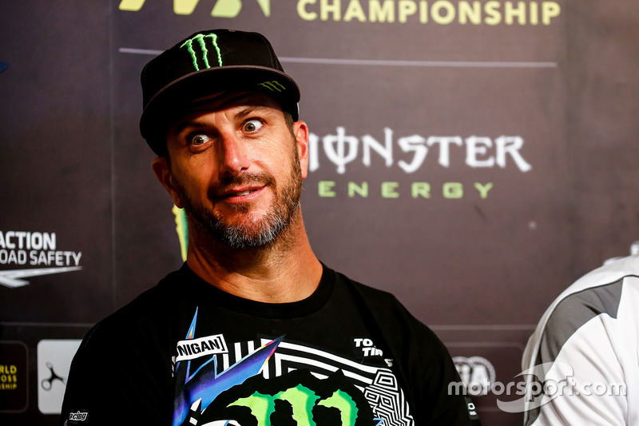
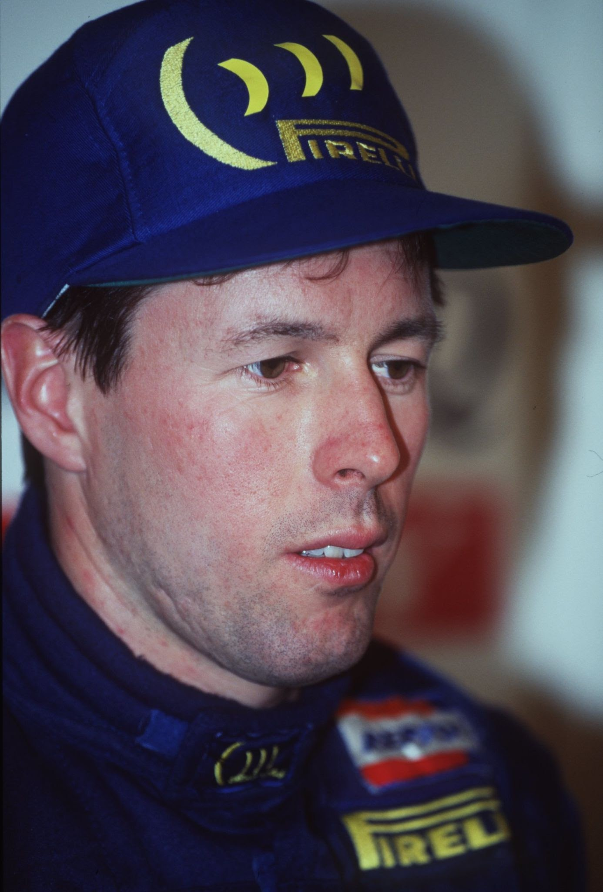
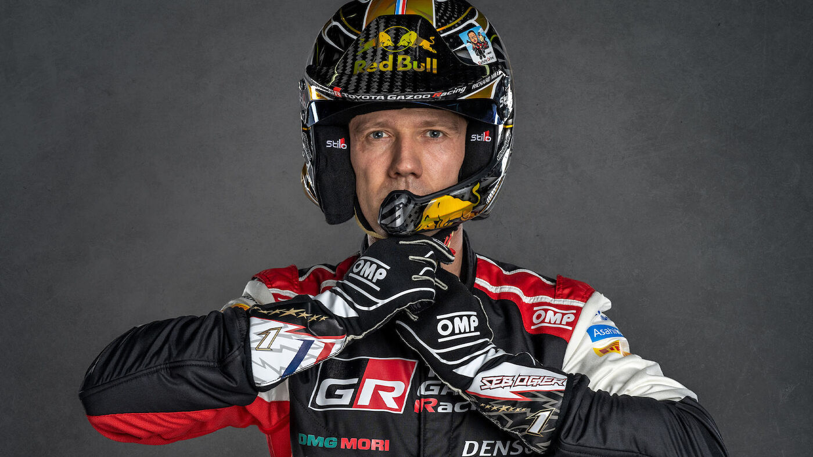
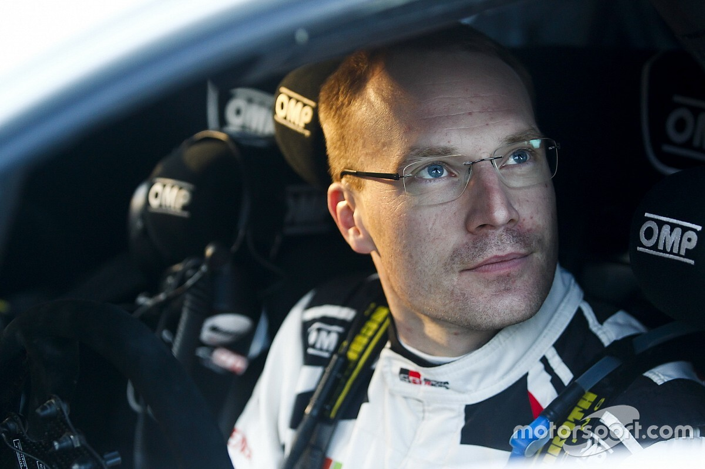

Kenneth Paul Block (born November 21, 1967) is
a professional rally driver with the Hoonigan Racing Division,

Colin Steele McRae was a British rally driver from Scotland.

Sébastien Ogier (born 17 December 1983) is
a French rally driver, competing for the Toyota Gazoo Racing Team in the World Rally Championship (WRC)

Jari-Matti Latvala (born 3 April 1985) is a Finnish rally driver who has competed in the World Rally Championship (WRC).